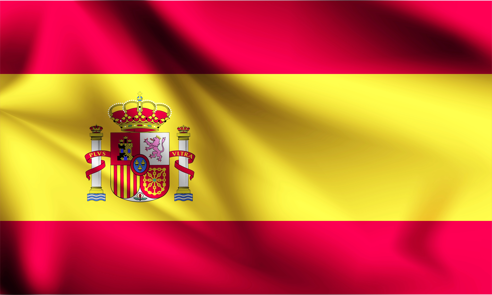

Испания
Испания - государство на юго-западе Европы, на Иберийском полуострове.
Омывается Атлантическим океаном на севере и западе и Средиземным морем на юге и востоке. Испания граничит с Францией,
Португалией, Андоррой, Марокко и английским владением Гибралтар.
Территория страны разделена на 17 автономных сообществ и 2 автономных города. Общая площадь 504 782 кв.
км (четвертая по этому показателю в Европе). Численность населения – 48 миллионов человек.
Испания - одно из самых популярных туристических направлений Европы.
Страна славится своими пляжами и морем, кухней и ночной жизнью, особой атмосферой и дружелюбием местных жителей
Интересно, что по количеству объектов Всемирного наследия ЮНЕСКО Испания уступает только Италии и Китаю.
Кроме этого, это страна с большим географическим и культурным разнообразием.
Здесь можно найти практически всё: от пышных лугов и снежных гор до болот и пустынь.
Испания занимает 80% территории Пиренейского полуострова. Также в её состав входят Балеарские острова,
Канарские острова и совсем крошечная часть североафриканского побережья.
Пиренейский полуостров расположен на крайнем юго-западе Европы.

Испания занимает 80% территории Пиренейского полуострова. Также в её состав входят Балеарские острова,
Канарские острова и совсем крошечная часть североафриканского побережья.
Пиренейский полуостров расположен на крайнем юго-западе Европы.
Рельеф Испании чрезвычайно разнообразен. Главную роль в нём играют горы и плоскогорья.
Страна является одной из самых гористых в Европе. Наиболее крупные горные системы: Пиренеи, Кордильера-Бетика, Иберийские,
Каталонские и Кантабрийские горы. Самая крупная равнина - Андалусская низменность, расположена на юге.
На северо-востоке расположена Арагонская равнина. Высочайшая вершина континентальный Испании - гора Муласен (3478 и).
Самая высокая вершина страны расположена на острове Тенерифе - это вулкан Тейде (3718 м).
Крупнейшие реки: Гвадалквивир, Тахо, Дуэро, Эбро. Испания известна большой протяжённостью береговой линии.
На побережье расположено несколько тысяч пляжей. Крупнейшие курорты: Коста-дель-Соль, Коста-де-ла-Лус, Коста-Бланка,
Коста-Брава, Коста-Дорада, Канарские и Балеарские острова.
Благодаря географическим особенностям очень разнообразен животный и растительный мир Испании.
Север страны похож на Центральную Европу, а юг напоминает Северную Африку.
На северо-западе встречаются широколиственные леса, на юге - пустыни и полупустыни,
а для побережья характерна средиземноморская флора.